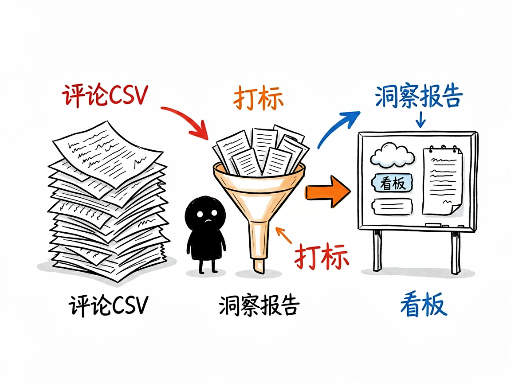
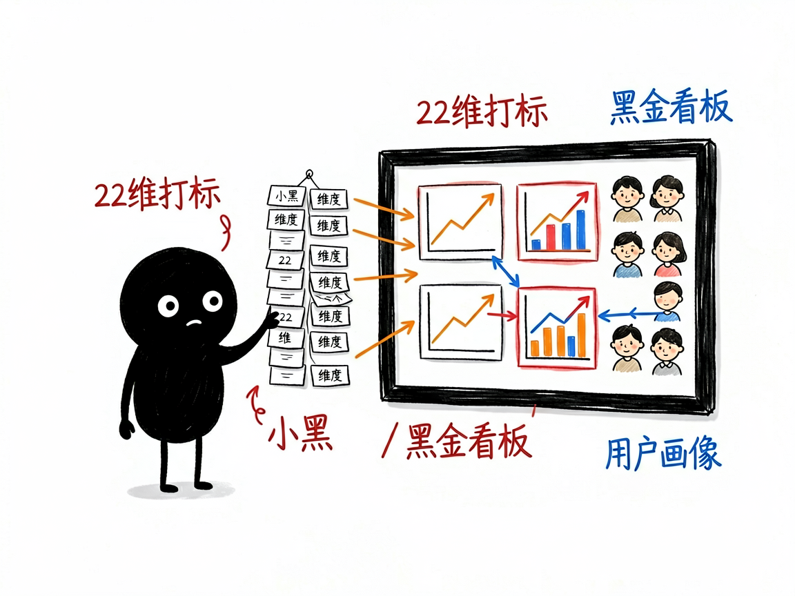

好评差评混成堆、没空一条条看？丢一份评论 CSV 进去，它还你打标明细、深度洞察报告和一个可视化看板。
产品该改啥、差评卡在哪、哪个卖点打动人，不能全凭感觉
卖家后台里成百上千条评论，明明知道"用户有话说"却没空看。simple-review-analyzer 把评论表格变成三样东西：打标后的明细数据、一份深度洞察报告、一个能直接打开看的可视化看板，让"谁在买、骂什么、夸什么"一目了然。
电商评论 VOC 分析工具 的六大能力
人群、场景、功能、质量、服务、体验、竞品对比、复购意愿全维度自动贴标
从评论里归纳 3–4 类典型用户，每类配精选"黄金样本"评论
汇总用户痛点、情感分布和关键词，知道大家到底在意什么
一个黑金风格 HTML 页面，6 个交互图表，浏览器直接打开就能展示
把对手的评论也喂进去，对比双方优劣势，找差异化机会
输入评论 CSV，输出打标明细 + 洞察报告 + 可视化看板
小黑手绘风格插图


从输入到产出，一步到位
快速开始
git clone https://github.com/liangdabiao/simple-review-analyzer.git # 放入 ~/.workbuddy/skills/ 或 ~/.claude/skills/
从店铺后台导出评论为 CSV（自家产品或竞品均可）
对 AI 说：这是评论表 reviews.csv，帮我分析用户都在吐槽啥、又夸啥
获得打标明细、深度洞察报告和可视化看板 HTML
现代化技术组合
关于 电商评论 VOC 分析工具 的常见疑问